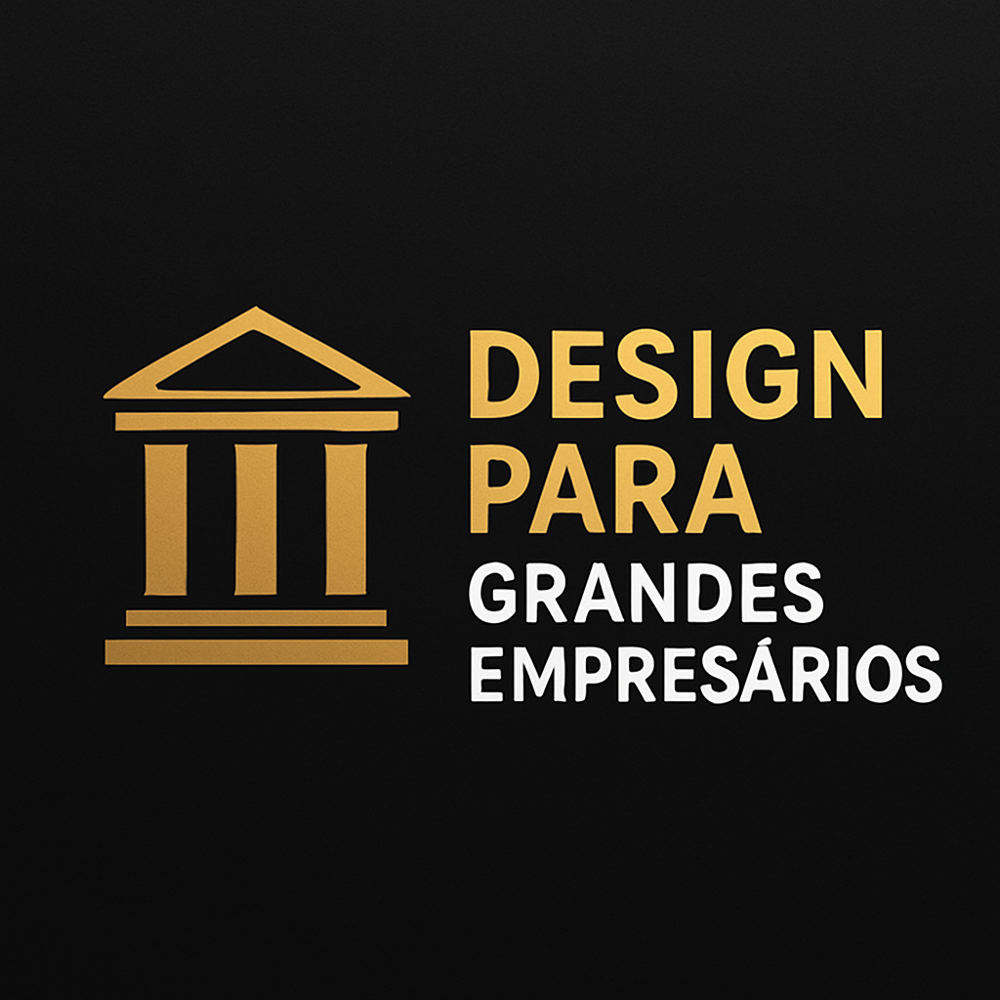

Design para Grandes Empresários
Este projeto foi pensado para empresários e executivos de alto padrão, que buscam exclusividade e sofisticação em suas marcas pessoais. A proposta foi criar um design que transmitisse poder, elegância e liderança.

A identidade visual foi desenvolvida com fontes refinadas e cores como preto, dourado e branco, criando uma estética luxuosa e de alto impacto. O resultado é um design que comunica autoridade e sucesso, ideal para marcas pessoais e corporativas de alto nível.
← Voltar aos projetos